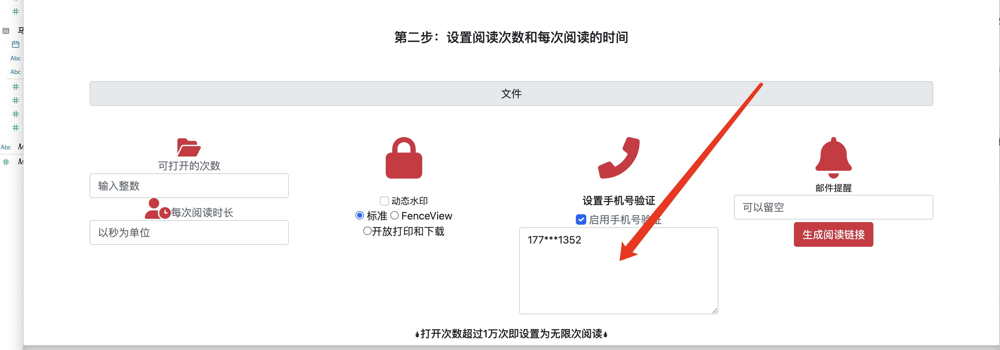
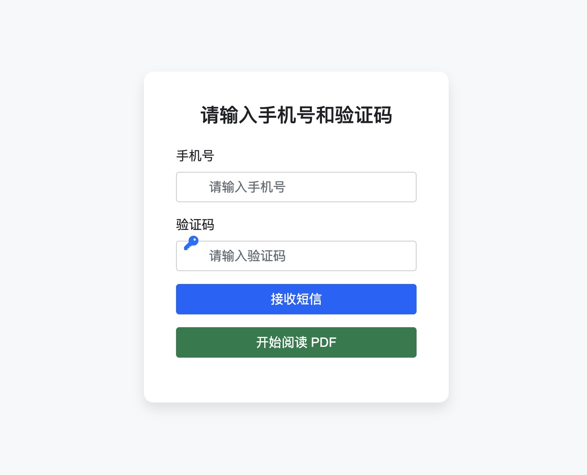

MaiPDF完整使用指南：从入门到精通
本指南将详细介绍如何使用MaiPDF进行专业的PDF文档管理、追踪和分析。无论您是初学者还是高级用户，都能在这里找到所需的信息。

🚀 MaiPDF简介
什么是MaiPDF？
MaiPDF是一款专业的PDF文档管理和追踪平台，它能够：
- 将普通PDF转换为可追踪的智能链接
- 记录访问者的详细信息（IP地址、访问时间等）
- 提供多层次的文档安全保护
- 生成详细的访问分析报告
📝 快速开始
开始之前的准备
使用MaiPDF之前，请确保您：
- 拥有需要追踪的PDF文件
- 明确追踪目标和需求
- 了解相关的隐私法规要求
📤 文件上传流程
访问上传界面
进入MaiPDF平台后，找到文件上传区域。界面设计简洁直观，支持拖拽上传。
选择并上传PDF文件
支持多种上传方式：
- 点击选择文件
- 拖拽文件到上传区域
- 支持批量上传多个文件

💡 上传提示：
- 支持的文件格式：PDF
- 单个文件大小限制：通常为50MB以内
- 建议文件名使用英文或数字，避免特殊字符
⚙️ 设置配置
基础设置配置
上传完成后，您可以配置各种追踪和安全选项：
主要设置选项
- 访问权限控制 - 设置谁可以访问您的文档
- 水印设置 - 添加个性化水印保护
- 安全验证 - 启用手机或邮箱验证
- 下载限制 - 控制文档下载权限
- 有效期设置 - 设置链接过期时间
动态水印配置
MaiPDF提供强大的动态水印功能，可以为每个访问者生成独特的水印：

水印类型选择：
- 文字水印（访问者信息、时间戳等）
- 图像水印（公司Logo等）
- 组合水印（文字+图像）
安全验证设置
为了提高文档安全性，可以启用多种验证方式：
手机验证码验证：
访问者需要输入有效的手机号码并验证短信码：
🔗 链接生成
生成追踪链接和二维码
配置完成后，系统会自动生成唯一的追踪链接和对应的二维码：
链接特性
- 唯一性 - 每个PDF文件都有独特的追踪链接
- 安全性 - 链接包含加密参数，防止伪造
- 灵活性 - 可以随时修改链接设置
- 多样性 - 同时提供链接和二维码形式
📊 追踪分析
访问记录查询
通过后台管理界面，您可以查看详细的访问统计：
详细分析报告
系统提供全面的访问分析数据：
包含的数据信息：
- 访问者IP地址和地理位置
- 访问时间和持续时长
- 设备和浏览器信息
- 访问来源和推荐页面
- 下载和互动统计
🔧 高级功能
文件替换功能
在不更改分享链接的情况下，可以替换原始PDF文件：
适用场景：
- 文档内容更新
- 错误修正
- 版本升级
阅读码管理
为每个访问生成独特的阅读码，便于追踪和管理：
水印信息查询
通过水印码可以反向查询文档信息和访问记录：


🛡️ 安全功能
防截图保护
MaiPDF具备智能防截图功能，当检测到可疑行为时会显示警告：


⚠️ 安全注意事项
- 定期检查访问记录，发现异常及时处理
- 合理设置文档有效期，避免长期暴露
- 对敏感文档启用多重验证
- 遵守相关法律法规，保护用户隐私
水印位置显示
在文档查看界面，水印会显示在指定位置：

🔧 常见问题解答
❓ 上传问题
Q: 文件上传失败怎么办？
A: 检查文件大小是否超限、网络连接是否稳定、文件格式是否正确。
❓ 追踪问题
Q: 为什么看不到访问记录？
A: 确认链接已被访问、检查时间筛选条件、验证追踪设置是否正确启用。
❓ 安全问题
Q: 如何确保文档安全？
A: 启用多重验证、设置合理的有效期、定期检查访问记录、使用强密码保护账户。
❓ 功能问题
Q: 可以修改已分享链接的设置吗？
A: 是的，MaiPDF支持动态修改链接设置，包括权限、有效期等。
🎯 最佳实践建议
📈 提高使用效果的建议
- 明确追踪目标 - 根据具体需求选择合适的追踪设置
- 合理设置权限 - 平衡安全性和用户体验
- 定期分析数据 - 利用访问数据优化文档分发策略
- 保护用户隐私 - 遵守相关法律法规，获取必要授权
- 备份重要数据 - 定期导出访问记录和统计数据
🚀 总结
MaiPDF为PDF文档管理提供了全面的解决方案。通过本指南，您应该能够熟练使用MaiPDF的各项功能，实现专业的文档追踪和分析。记住，合理使用这些功能不仅能提高工作效率，还能为您的业务决策提供有价值的数据支持。